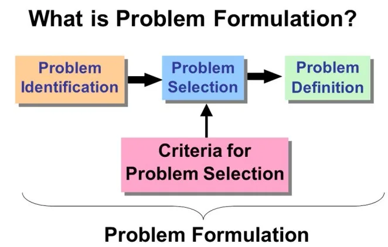
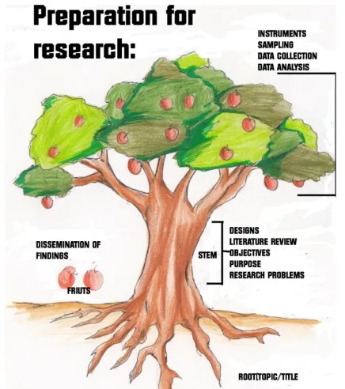

Expanded Nursing Uganda Explanation
Formulation of research Problem, Topics, Objectives should be understood beyond a short definition. Link the concept to patient history, focused assessment, common risks, nursing priorities, documentation and evaluation of outcomes.
01 Overview
- Formulation of Research Topics
- Research Problem
- Themes of Researchable Topics
- How to Develop a Research Topic/Question
- Qualities of a Good Research Topic
- Research Objectives
- Types of Research Objectives
- How to State Objectives
Often, researchers want to define a research topic before fully understanding the underlying problem. However, a strong research topic emerges from identifying issues that require attention and solutions.
This means a problem should be at hand in order to develop a research topic, which then naturally leads to objectives and questions.
A research topic (or title) is essentially a central theme or idea around which all aspects of the research will revolve.
- Root: The research topic acts as the root, anchoring all ideas and ensuring every concept identifies with the topic.
- Stem: The middle ideas and activities form the stem of the tree, connecting the root to the upper parts.
- Branches, Leaves, and Fruits: These represent the actual conducting of the research.
- Fruits: The research findings are the fruits. These should directly relate to the initial "fruit planted" (the topic), meaning the information obtained must have a clear relationship with the topic.
Example Topic: ‘A study on knowledge and practice among mothers of neonates at Soba village, Jota district.’
A research problem is the core interest of a researcher, representing what they aim to discover or study. It can be defined as a statement about an area of concern, a condition to be improved, or a difficulty to be eliminated.
Research problems can originate from various avenues:
- Personal Interest and Experience: Researchers often draw from their own observations, professional experiences, or personal curiosity. For example, a nurse might notice a recurring issue in patient care that sparks a desire to investigate.
- Use of Intellectual Curiosity: Asking fundamental questions like "How?" "Why?" "What if?" "What factors influence...?" can lead to the identification of researchable problems.
- Prior Research and Recommendations: Reviewing existing literature often reveals recommendations for further studies, unsolved questions, or limitations in previous research that present new problems to explore.
- Program Evaluation Gaps: During the assessment of a specific program or intervention, a researcher might identify an unaddressed gap or an area needing further investigation to improve effectiveness.
- Direct Observation of Community Needs (Applied Research): Observing current needs or challenges within a community often gives rise to applied research problems aimed at finding practical solutions. For instance, a health worker might observe a high prevalence of a certain disease in a community, prompting research into its causes or prevention strategies.
A research problem is often framed by asking specific questions:
- "What is the cause of the cholera outbreak among people in Katanga?" Here, the researcher is interested in studying or finding out the cause of the cholera outbreak among people in Katanga. This problem identifies a health crisis, a specific population, and a location.
- "Which age group is most affected by malaria in Mulago?" Here, the researcher is interested in studying or finding out the age group most affected by malaria in Mulago. This problem identifies a disease, a specific demographic, and a location.
Trainees should select topics related to Nursing and Midwifery practice. The following are some examples, but Trainees are not limited to those listed below:
- a) Reproductive health
- b) Legal aspects in Nursing Practice
- c) Mental Health
- d) Management, leadership, and Administration in Nursing
- e) Child Health
- f) Older adults and gerontological Nursing
- g) Neglected / Forgotten diseases and vulnerable groups
- h) Persons with special needs
- i) Infectious and Emerging Diseases like Ebola, Marburg virus, swine flu, and others
- j) Task shifting in Healthcare, skill mixing, and task sharing
- k) Gender-related issues in the Nursing profession
- l) Occupational Health Hazards
- m) Nursing Education
- n) Nursing Practice
- o) Genetics and Genomics
- p) Community and Public Health
This process integrates problem identification with narrowing down to a focused question:
- Begin by identifying a broader subject of interest that may lead to investigation: Example: Diarrheal diseases.
- Do preliminary research on the general topic: Find out what research has already been done and what literature already exists. This helps in understanding the current state of knowledge.
- Begin with "information gaps" (What do you already know about the problem?): Example: You might know that studies exist showing the high incidence of diarrheal diseases.
- What do you still need to know? (e.g., causes of diarrheal diseases, risk factors to diarrheal diseases, effectiveness of specific interventions, etc.).
- What are the broad questions?: The need to know about a problem will lead to a few specific questions.
- Example: What are the primary drivers of diarrheal disease burden in specific communities?
- Narrow this to a specific population: Example: Among children less than one year.
- Narrow the scope and focus of research: Combine the problem, population, and specific aspect.
- Example: "Assessment of risk factors to diarrheal diseases among children less than one year in [Specific Region/Village]."
A good research topic should be FINER (Feasible, Interesting, Novel, Ethical, and Relevant) and therefore should have the following attributes:
- Relevant to the Nursing profession: Directly addresses issues, practices, or knowledge gaps within nursing and midwifery.
- Feasible in relation to time, method, material resources, and funds: Can realistically be completed within the given constraints.
- In line with national development priorities: Contributes to broader health goals or policies of the country (e.g., Uganda).
- Acceptable by the leadership: Politically, culturally, professionally, and economically viable and supported by relevant stakeholders.
- Potentially advancing new knowledge in Nursing: Offers the possibility of contributing fresh insights or understanding.
- Applicable in the Nursing profession: The findings can be used to improve practice, education, or policy in nursing.
- In the trainee’s interest and appealing to the reader: Keeps the researcher motivated and engages the target audience.
- Ethically acceptable: Adheres to all ethical guidelines and principles, ensuring participant safety and rights.
- Reflect a level of innovativeness: Shows some originality or a fresh perspective on an existing problem.
- F: Feasible: The problem must be researchable within practical constraints such as cost, available time, access to respondents/participants, and other resources.
- I: Interesting: The problem should be interesting enough to sustain the researcher's motivation through the many hurdles and frustrations of the research process. It's also wise to confirm that others (e.g., academic community, stakeholders) also find it interesting, ensuring its relevance.
- N: Novel: Good research contributes new information. The problem should ideally explore something that is not too common or has not been extensively researched, offering fresh insights.
- E: Ethical: The study should not pose physical, psychological, social, or financial risks to respondents, nor should it involve an invasion of privacy. Ethical considerations are paramount.
- R: Relevant or Significant: Consider how the results of addressing this problem might advance scientific knowledge, improve clinical practice, or influence health policy. The problem should have a meaningful impact on society.
A research objective is a clear and summarized statement that provides direction to investigate the variables under study. A clearly defined objective directs a researcher in the right direction. Well-defined objectives are an important feature of a good research study. Without a clear objective, a researcher is aimless and directionless in conducting the study, and without focused objectives, no replicable scientific findings can be expected.
Research objectives are crucial for several reasons:
- FOCUS: A clearly defined research objective helps the researcher to focus on the study. The formulation of research objectives helps in narrowing down the study to its essentials. It avoids unnecessary findings, which otherwise lead to a wastage of resources.
- AVOID UNNECESSARY DATA: The formulation of research objectives helps the researcher to avoid unnecessary accumulation of data that is not needed for the chosen problem.
- ORGANIZATION: The formulation of objectives organizes the study into clearly defined parts or phases. Thus, the objectives help organize the study results into main parts as per the preset objectives.
- GIVES DIRECTION: A well-formulated objective facilitates the development of research methodology and helps to orient the collection, analysis, interpretation, and utilization of data.
A well-stated objective must be “SMART” :
- S – SPECIFIC: A good research objective should be clear and focused on a specific aspect or goal of the study. It avoids being too broad or vague, so researchers know exactly what they want to achieve.
- M – MEASURABLE: The objective should be measurable, meaning that there should be a way to determine if the research goal has been achieved. It’s important to use concrete and quantifiable terms to assess the outcomes.
- A – ATTAINABLE: The research objective should be achievable within the resources, time, and scope of the study. It’s important to set realistic goals that can be accomplished with the available means.
- R – REALISTIC: A good research objective should be grounded in reality and aligned with what is feasible. Researchers should consider practical constraints and not set impossible goals.
- T – TIME-BOUND: The objective should have a specific timeframe within which it will be accomplished. Setting a deadline helps researchers stay focused and ensures the study progresses effectively.
Research objectives are generally categorized into two types:
General objectives are broad goals to be achieved. They state what the researcher expects to achieve by the study in general terms. General objectives are broad and overall goals that the researcher aims to achieve through the study. They provide a big-picture view of what the research intends to accomplish. These objectives are not very detailed and do not specify the exact actions to be taken. Instead, they outline the general direction and purpose of the study.
- Example: For a nursing research study on patient satisfaction, a general objective could be: “To assess the factors influencing patient satisfaction in a hospital setting.” or “The study will aim at assessing the factors influencing patient satisfaction in a hospital setting”
Specific objectives are short-term and narrow in focus. General objectives are broken into small, logically connected parts to form specific objectives. The general objective is met through meeting the specific objectives stated. Specific objectives clearly specify what the researcher will do in the study, where, and for what purpose the study is done. Specific objectives are more detailed and narrow in focus. They are derived from the general objective and break it down into smaller, manageable parts. These objectives clearly state what the researcher will do, where the study will take place, and the specific purpose of the study.
- Example: Continuing from the general objective above, specific objectives could be: “The study will aim at identifying individual factors influencing patient satisfaction in a hospital setting.”
- “The study will aim at finding out health worker related factors influencing patient satisfaction in a hospital setting..”
In this example, the specific objectives provide clear directions for data collection and analysis. Achieving these specific objectives will contribute to fulfilling the broader, general objective of understanding the factors influencing patient satisfaction.
Overall, general objectives set the overall direction of the research, while specific objectives break down the research process into smaller, achievable steps, guiding the researcher in accomplishing the broader research goal.
In the example provided, the broad objective and specific objectives can be identified as follows:
- Broad Objective: The broad objective is the overarching goal of the research study. In this case, the broad objective is: “The study will aim at identifying risk factors to diarrheal diseases among children below 1 year.”
- Specific Objectives: Specific objectives are the smaller, more focused goals that contribute to achieving the broad objective. In this example, some specific objectives could be: “To assess socioeconomic risk factors to diarrheal diseases among children below 1 year.”
- “To find out environmental risk factors to diarrheal diseases among children below 1 year”
- The objective should be presented briefly and concisely.
- The objective should cover the different aspects of the problem and its contributing factors in a coherent way and in a logical sequence.
- The objectives should be clearly phrased in operational terms, specifying exactly what the researcher is going to do, where, and for what purpose.
- The objectives are realistic considering the local conditions.
- The objectives use action verbs that are specific enough to be evaluated.
- Define
- Describe
- Draw
- Identify
- Label
- List
- Match
- Record
- Select
- State
- Name
- Outline
- Point out
- Quote
- Read
- Recite
- Recognize
02 Nursing Uganda Clinical Lens
Use Formulation of research topics as a practical nursing topic, not only a memorized definition. Translate theory into safe decisions, accountability, communication and service improvement.
- What to understand first: define formulation of research topics, identify the normal or expected pattern, then explain what changes when the patient is unwell.
- Why it matters in care: the nurse must recognize risk early, explain findings clearly, document accurately and know when to escalate.
- How to revise it: connect each point to assessment, nursing diagnosis or care problem, intervention, rationale and evaluation.
03 Assessment Guide
- The problem, stakeholders, available resources, policy requirements and ethical issues.
- Risks to patients, staff, confidentiality, quality, costs and continuity.
- Documentation, reporting lines, supervision and evaluation measures.
04 Nursing Priorities, Rationales and Outcomes
- Use evidence, policy and professional standards to guide action.
- Communicate clearly, document decisions and protect confidentiality.
- Evaluate whether the action improves safety, learning or service delivery.
The rationale for these priorities is patient safety: nursing actions should prevent deterioration, reduce discomfort, support recovery and create clear evidence for the next caregiver.
- Expected outcome: The plan is documented, realistic, ethical and improves patient care or learning outcomes.
05 Patient Teaching and Revision Check
- Explain formulation of research topics in simple language the patient or caregiver can repeat back.
- Teach warning signs, medicine or follow-up instructions, hygiene or lifestyle points where relevant.
- For exams, prepare a short answer using: definition, causes or risk factors, signs, assessment, management, complications and prevention.
- For ward practice, document baseline findings, actions taken, patient response and the plan for review.
Illustrations and Diagrams (6)




Related Video Lectures
Watch nursing lecture videos on YouTube for this topic. Opens in a new tab.
Watch on YouTubeExternal link: YouTube may use its own cookies and terms. Nursing Uganda is not affiliated with YouTube.